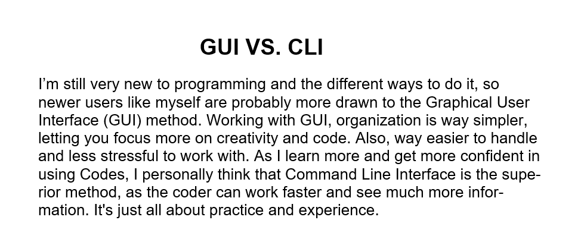
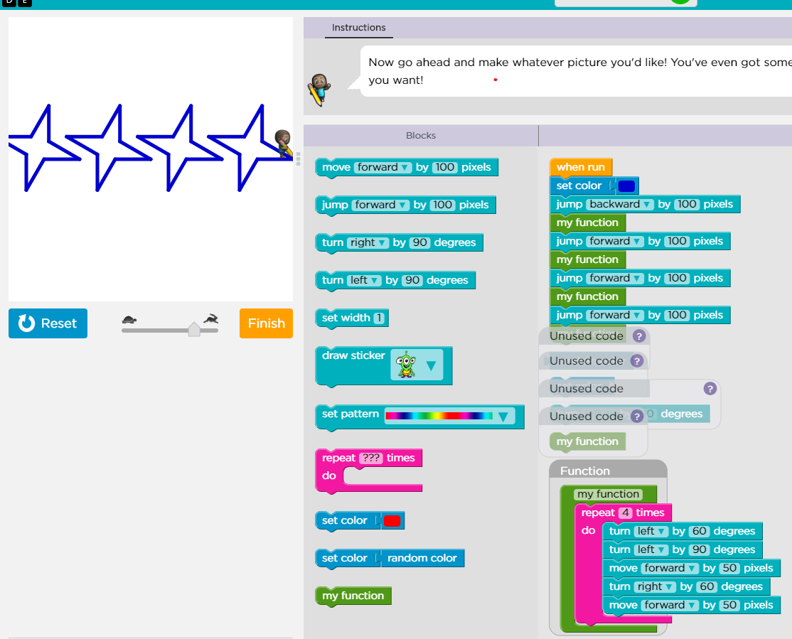

Week 1

Week 1, I started the Mart 101 Creative Coding Class taught by Michael Cassens.
My first assignmnent was writing a short paper on the differences of GUI Vs. CLI.
I was a total noob to coding then. Now I know a little more! I'm more of a noob level 2!
Now I can't say for sure If I have the same opinion as I did when I wrote that! I really love the creative side of things.
Week 2

Week 2, I took some online qizes, took online tutorials at the artist lab website, and used the artist lab to create this final creation.
I experiented a bunch with this lab. I found a lot of cool shapes while just messing around! I used this one because it reminded me of the U.S flag.
I eventually want to be able to make some of the amazing, abstract art that I've seen.
Week 3
Week 3, this week we talked about grit, and explored the world of scratch.
I had a rough time learning scratch and it took me awhile. But eventually I figured it out, and created something I'm proud of.
To get full credit, I had to make the characters move quite a bit, but I couldn't figure out when to move them! I had a story in mind and It didn't involve movement.
I finally found a solution, by moving the character while they talked it didn't ruin the story. It actually made it smoother!
Week 4


Week 4, this week we worked on making apps and little games. We used an website and a drag and drop method to make them.
I probably struggled the most with the art app, but I'm happy I finished it because it's me favorite of the two!
The funny part about the game, was that before I made it. I really want to make a bigger zombie game.
It is a hope of mine that I can do that someday!
Week 5

Week 5, this week we used a new program called Alice. Alice was pretty simple and easy to use. I loved making the Walruses. I decided to make the story by accident after creating 12 different Walruses!
I really tried to make the background more interesting and follow the story but couldn't quite get exactly what I wanted.
I enjoyed making the story, and Mr. Michael Cassens said he liked it too!
Week's 6, 7, and 8
Week 6, 7, and 8 we were using website pages that we created to practice using html, style, and script. I loved making these pages, although I did have trouble with the 3rd page.
Week 6 we made the original pages, then in Week 7, we styled the pages and learned how to change colors, formats, and a lot of other things.
In Week 8, we mostly worked on the functionality of the 3rd page.(The one I struggled with the most!)
Week 9 and 10

Week 9 and 10 we worked on a portrait using still shapes. I used the design of a minecraft character for inspiration.
On Week 10 we worked on animating the shapes to move across the screen.
Even though making the shapes move was incredibly hard, that project is the one I'm most proud of.
Week 11, 12 and 13

Week 11, We started a new project. The project was making a little mini-game. We made a moveable character, little enemies that drifted across the screen.
On week 12 we expirimented with functions and calling them. We organized our code, and I learned a lot about functions from that.
On week 13, our final week, we learned about arrays and how to implement them. We implemented them in our Week 12 work and made it look AWESOME!